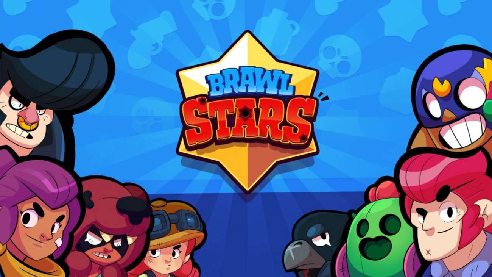
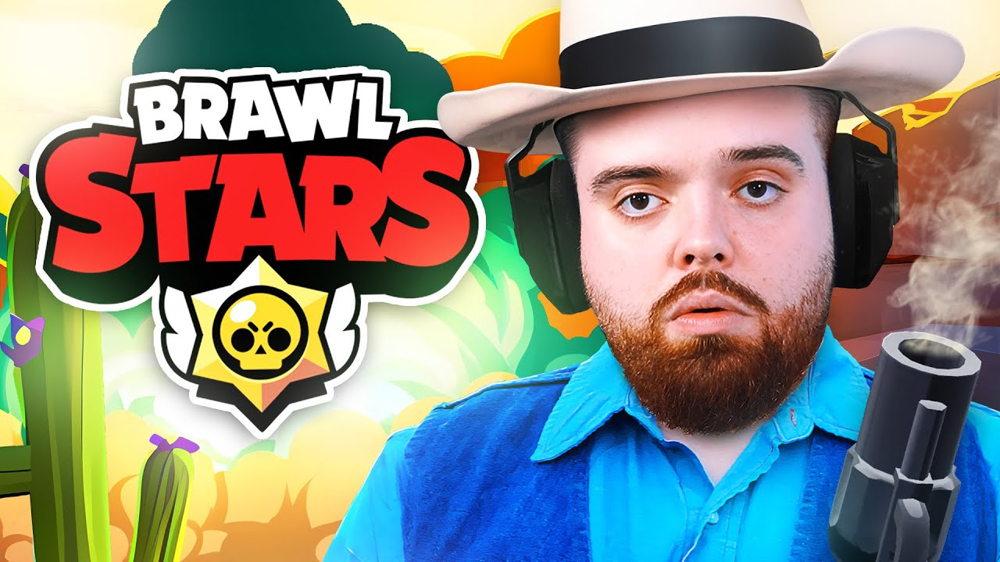
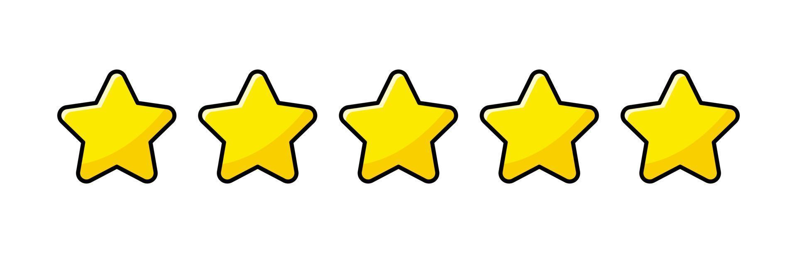
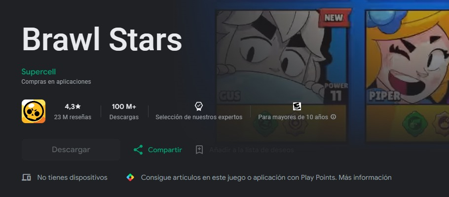
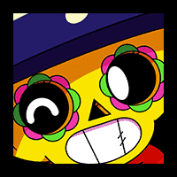

Brawl Stars
Creador: Jon Franzas

Jon Franzas comenzó a trabajar en el proyecto original de Brawl Stars en 2014.
Fecha de lanzamiento: 15 de junio de 2017
Brawl Stars es un emocionante juego de acción y estrategia el cual puedes encontrar para iOS o Android.
Un juego que es demasiado entretenido ya que tiene múltiples personajes, modos y misiones, sin duda uno de
los mejores juegos para dispositivos móviles en la época actual. Un juego donde puedes desde perder amistades
pero ganar copas. Sin duda alguna es el juego del momento, y tú, ¿Ya instalaste Brawl Stars? Si no es así entonces
¿Qué esperas?, corre a instalarlo y no te pierdas de horas de enojo y diversión.
La calificación que yo personalmente le doy a este juego es de 5 frescas y bonitas estrellas
Pero su calificación oficial es de 4.3 estrellas, seguro los que la calificaron mal son main Edgar
Sin duda alguna es un muy buen juego 100% recomendado, por cierto el mejor brawler es Poco
y como dice mi amigo Cesar:
Eres perfecta como Brawl Stars.
